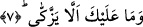
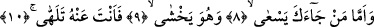

7. Oysaki onun temizlenip arınmasından sen sorumlu değilsin.
Kendisini İslâm’a muhtaç görmeyen o kimsenin nefsini temizlememesi dolayısıyla
sana yönelecek herhangi bir günah ve vebal yoktur ki sen onun durumuna önem veresin
ve müslüman olan kişiden yüz çeviresin. Sana düşen sâdece tebliğ etmektir. O halde
İslâm’a girme kabiliyeti ve yeteneği olmayan bir kimseyi İslâm’a girsin diye nasıl olur
da zorlarsın. O kimse sâdece dünyayı sevmek ve âhireti görmemek karekteri üzerine
yaratılmıştır.
Bu âyet-i kerimede âhiretten yüz çeviren kimsenin değersiz olduğuna işâret vardır.
8-10. Fakat koşarak ve korkarak sana gelenle de ilgilenmiyorsun.
“Fakat” sendeki hidâyet ve irşadı, hayır hasletlerini talep edip “koşarak ve”
Allah’tan ya da sana gelmeyi düşündüğünde kâfirlerden “korkarak sana gelenle de
ilgilenmiyorsun.”
Müftî Sa’dî der ki: Zâhir olan ihtimale göre bu âyetlerde “ihtibak” sanatı vardır.
Şöylesine ki; önce beşinci âyette “ğına/zenginlik, muhtaç olmamak” zikredilmiş, bunun
zikredilmesiyle zenginliğin zıddı olan fakirlik peşinden gelen âyette zikredilmemiştir.
Çünkü önceki âyetteki zenginlik sonraki âyetteki fakirliğe delalet etmektedir. Öte yandan
son âyette “meci’/gelmek ve haşyet/korku” kelimeleri zikredilmiş, bunların zıtları olan
“yüz çevirmek ve korkmamak” anlamları ise bundan önceki âyette var kabul edilmiştir.
Çünkü “gelmek, korkmak” kelimeleri bunlara delalet etmektedir. Şimdi bu açıklamalar
ışığında âyeti “ihtibak” sanatına göre yorumlarsak şöyle denmiş olmaktadır: Kendini
muhtaç görmeyene gelince sen ona yöneliyorsun. Fakat sana koşarak gelene gelince o
kişi fakirdir ve o Allah’tan korkmaktadır. Oysa kendini muhtaç görmeyen ise hem sana
yönelmemekte ve hem de Allah’tan korkmamaktadır.
“Telehhâ” kelimesini “ilgilenmiyorsun” şeklinde tercüme ettik. Bu kelimenin anlamı
“yüz çevirmek”tir. Yoksa bu fiil, “oynamak” anlamına gelen, “lehâ-yelhu-lehven”
kökünden değildir. Çünkü fiilin fâili Peygamber Efendimiz (s.a.)’dir. Şu halde onun
yüce şanına “oynamak” fiilinin nisbet edilmesi lâyık değildir. Ama onun bir maslahat
gereği herhangi bir şeyle ilgilenmemesi mümkündür.
Bazı tefsir kitaplarında şöyle bir açıklama yapılmaktadır: Âyette geçen “telehhâ”
fiilini “lehv” kökünden alsak ve gaflet ehli ile ilgilenmeyi -herhangi bir fayda
getirmeyen boş bir iş olduğu için- lehv ve la’b kabilinden saysak, bu da mantıklı bir